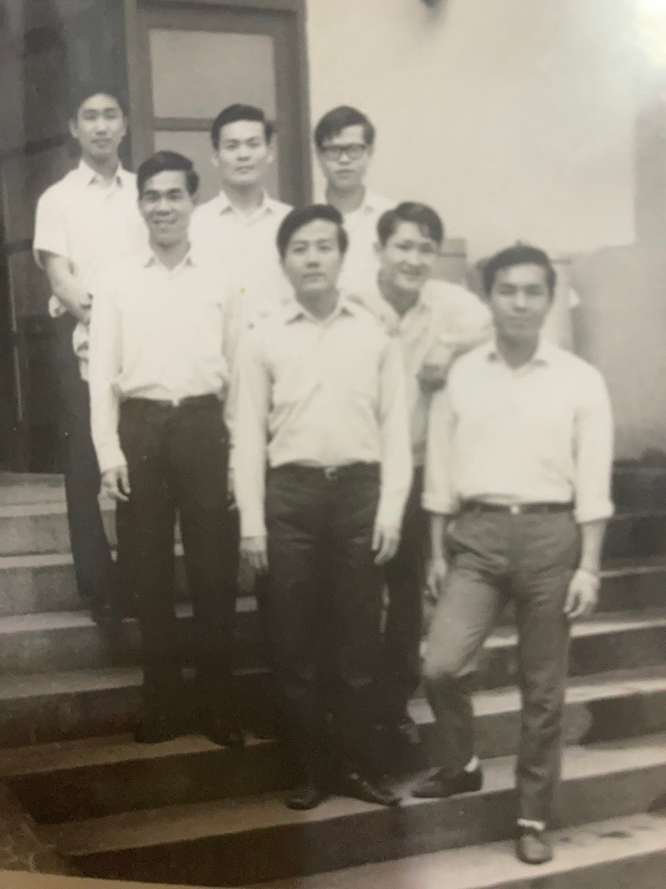
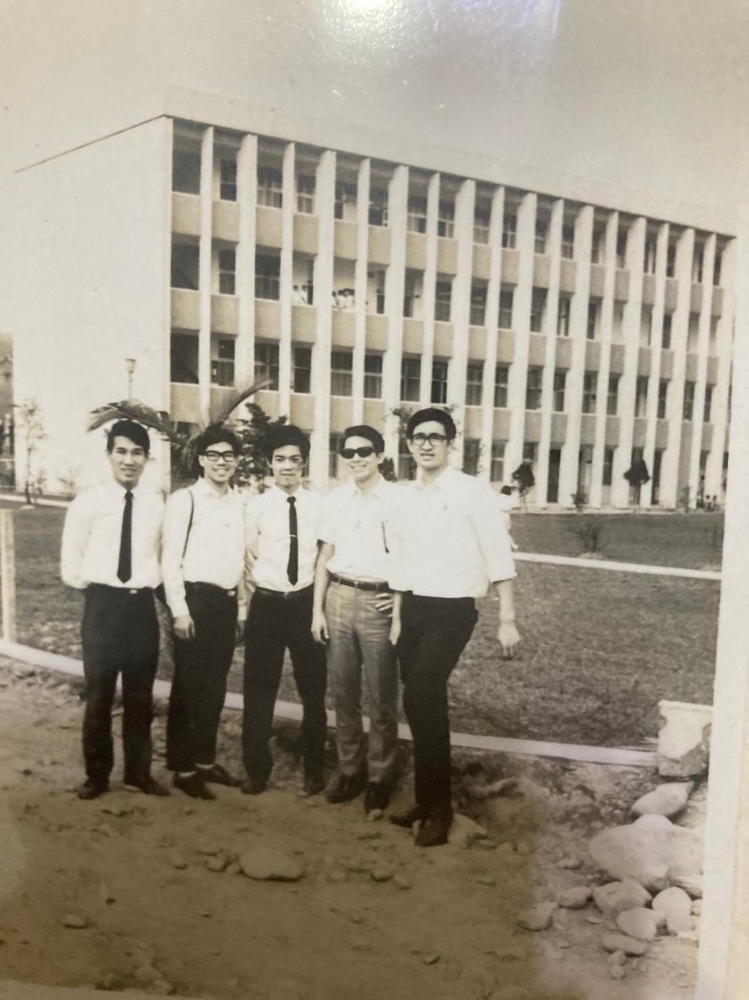
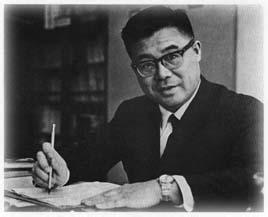
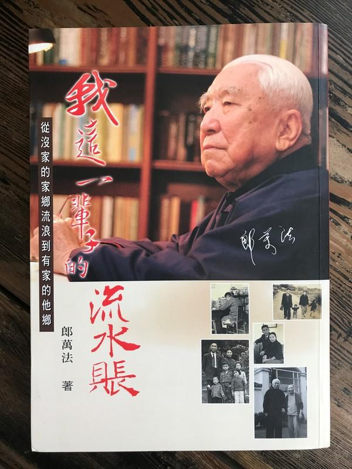
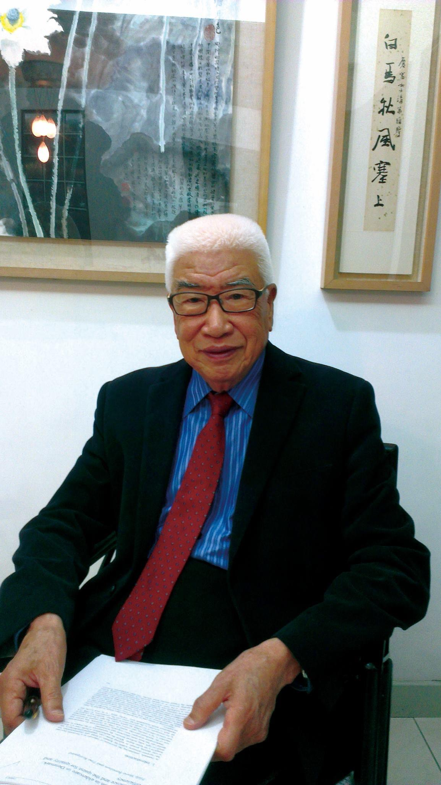
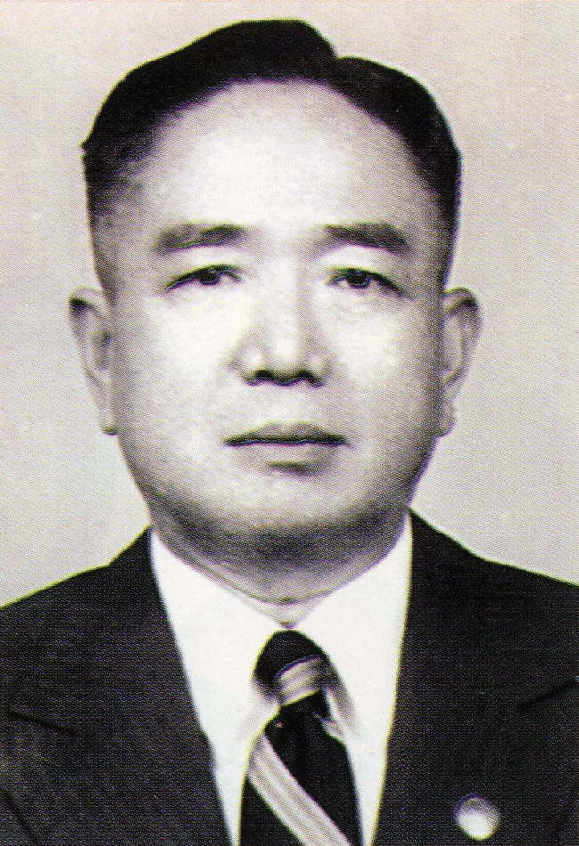
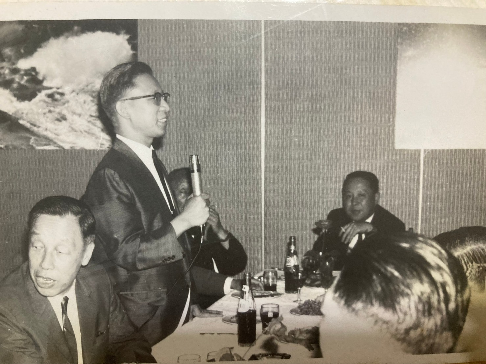
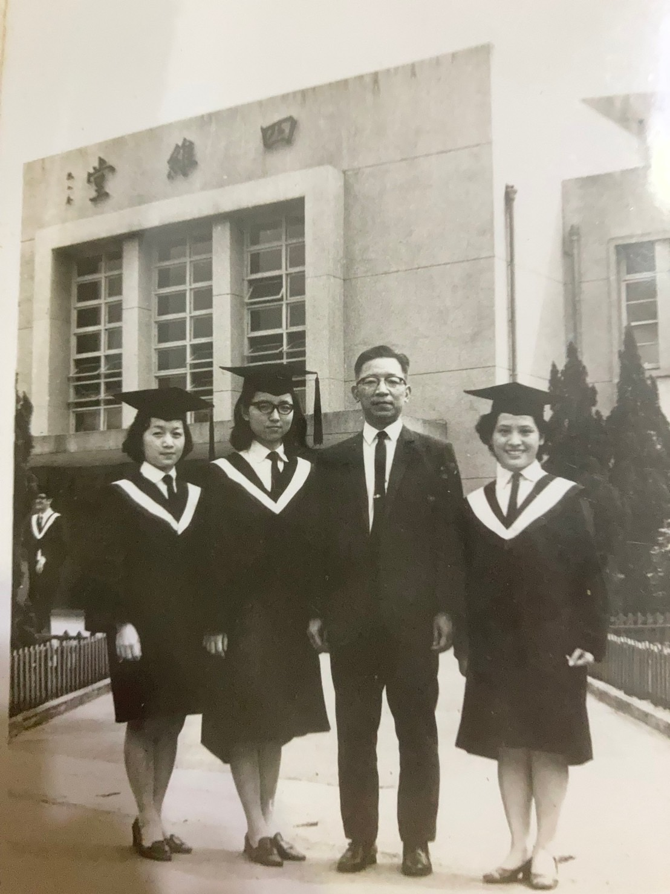
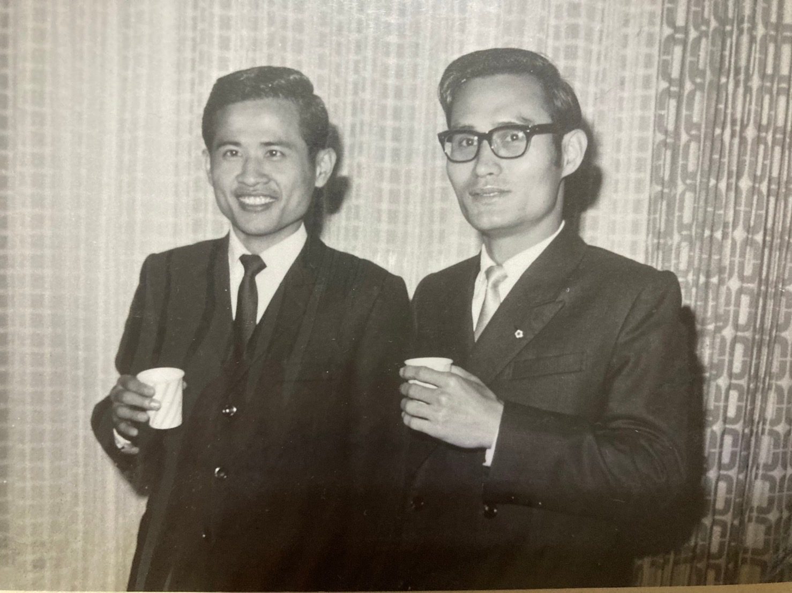

我們這一班 群體描述
作者孫全玉第十屆銀行系畢業
民國五十六年經由大專聯考分發到系四十位同學，加上由四家中學保送的四位同學，以及從香港、馬來西亞、印尼、泰國、越南、印度等地來就學的十七位僑生，合計六十一位。其後，在二年級時，有三位同學轉到其他系，而由其他系轉進來十二位同學，民國六十年畢業時，本班計有七十位同學。名單如下：
李素美 謝美玉 林 娟 吳盛賢 尤錦堂 丁志愛 張慧文 曾賢洲 宋小瑩 魏春梅 羅靜春 曾寶鳳 陳莉莉 羅淑裕 王 玲 黃森釧 謝安成 呂和美 黎銀妹 嚴建三 洪志明 古富其 陳玲美 許炳南 李重威 蔡錦麗 林孫源 辜英齡 黃和平 馮明倫 鄭穎君 施紫玲 陳葳華 謝展榮 王文枝 宋秋來 陳榮顯 林台珍 黃秋光 孫全玉 王怡人 馬艷華 楊振良 慕容柏 梁麗紅 顧愛英 李祖祥 陳友福 鍾才霖 束寧新 廖瑤仙 何慕瑾 黃珮瑤 廖景星 蔡漢榮 許曲泉 何宜浩 陳勝隆 莊渭源 張誠俊 王台鳳 黃士芳 范好美 劉麗卿 周成波 康 魯 王貽媺 魏慶珊 陳海倫 柯可君
 
使用說明
|
1. 如何分享本網站 https://tcwang.github.io/NCCUBkAlumni/ ? 請他人掃描右方 QR Code 2. 進入網頁後, 如何將此網頁加入書籤或建立手機桌面 捷徑縮圖? 請參考 使用說明。 3. 當部分PDF 文件字型太小時, 建議使用手機橫向 閱覽模式。 |
|
相關網站
- 政大金融系暨銀行系系友會 Facebook 臉書
- 國立政治大學 金融學系 校友專區
一年級
Test 導師： 張公甫老師大一張老師同時也擔任「民法概論」的課程，讓我們暸解我國法律的基本架構。每到假日，同學們踏青郊遊，經常是張老師為我們安排相關機構的巴士接送。還記得本班第一次郊遊，就是當時擔任助教的張春雄老師帶我們這群十七、八歲的小男生小女生去新北投。
魯傳鼎老師
魯傳鼎1921年生 ，安徽蕭縣人，經濟學家。中央大學經濟系畢業，曾赴美哥倫比亞大學、匹茲堡大學、哈佛大學商學院深造。曾任教於台灣師範院法商學院。1954年轉入「工業委員會」從事經濟計畫工作。1960年起，歷任政治大學國際貿易系主任，公共行政及企業管理教育中心主任，國際貿易研究所所長，商學院院長。
1975年創立拓展國際市場學會任理事長。大力翻譯國外經濟著作，有《國際貿易理論》、《貨幣與銀行學概要》、 《國際經濟學導論》、《經濟學》、《經濟學原理》及其他著作多種。
Youtube 2020/04/14: 訪政大國貿系主任魯傳鼎談英國加入歐洲共同市場的影響
郎萬法老師
山東煙臺市人。1943年復旦大學會計學系畢業。曾任臺灣政治大學、淡江大學、輔仁大學、逢甲大學等院校副教授、教授。匯豐證券股份有限公司董事長、中華民國會計師公會聯合會理事長、臺灣省會計師公會理事長等。著有《租稅規則》、 《租稅救濟》等著作。
梁金成老師
預留照片位置及檔案劉長蘭老師
在其他課業方面，「經濟學」由魯傳鼎老師從「需求」與「供給」教起，人生首次唸外文書就是那本厚達七百五十頁的教科書。魯老師每兩週要「小考」（quiz）一次，由韓務實助教負責。督責之嚴，讓我們在宿舍或家裡猛翻字典。「會計學（一）」的郎萬法老師用中英文教科書各一，上課時經常問同學相關問題，如果答不出來或不對，責備毫不留情，當時許多同學視上課為畏途。郎老師在會計實務上的要求尤其嚴格，例如寫會計分錄，「中文的會計科目借貸要相差兩個字」、「英文的會計科目借貸要相差四個字母」、「什麼時候要放$符號」、「什麼時候要劃單線或雙橫線」等規範，毫不含糊。此外，我們還得向梁金成老師學「珠算」，也就是打算盤，那時「算盤」還是金融機構與公司行號用以計算的最主要工具。 「大一英文」的劉長蘭老師經常要同學「即席翻譯一段英文」，如果譯得不好，劉老師最常問的就是「您是哪家中學畢業的呀」，讓被問的同學尷尬不已。我們上課地點是第六棟教室，在進學校大門後的左側（目前已拆除改建），窗外樹影搖曳、陽光燦爛，教室裡的我們，像海綿吸水似的，接收許多從未學習的新知。
童秀明系主任
字伯嚴，察哈爾宣化(今屬河北)人，1905年生。 畢業於私立南開大學， 後赴英國，入倫敦大學經濟學院研究。回國後，曾任河北省政府秘書、處長、組長，國民政府行政院善後救濟總署晉察綏分署副署長，河北省政府委員和省立河北大學教授等職。1948年，當選為行憲國民大會代表。1949年，任國民大會代表，并任東吳大學教授、國立政治大學教授兼銀行學系主任等教職。柴松林老師
生於中國遼北，祖籍中國浙江寧波， 統計學學者，專長為人口統計學與經濟統計，為國立政治大學教授。 台灣社會運動先驅，致力於台灣人權與消費者保護，為消費者文教基金會創辦人之一，現任第一社會福利基金會董事、環境與發展基金會董事長。
閻子桂老師
預留照片位置及檔案袁宗蔚老師
畢業於中央政治學校大學部，後赴 美國留學，入賓夕法尼亞大學華敦財商研究院保險專業學習。 畢業後回國，歷任國民政府財政部及中央銀行稽核、專員、中合產物保險公司總經理等職。
二年級
童秀明系主任在大二時教我們「貨幣銀行學」，那幅英國紳士的溫文儒雅，讓我們對銀行這個古老行業充滿憧憬。柴松林老師的統計學，除開數理邏輯外，更多了批判性思維。閻子桂老師則在「財政學」以外，交代更多的人文情懷。向英華老師用濃厚的鄉音，替我們打下「商事法」的堅實基礎。袁宗蔚老師那本厚厚的「保險學」，啟蒙我們走進嚴肅的領域。以上課程，都在進學校大門右側的第八棟教室進行（目前已改為校友聯絡中心）。杜文田老師
預留照片位置及檔案楊承厚老師
臺灣銀行第8任總經理。著有貨幣學概論、全融市場概要、銀行法釋疑。
Youtube 2020/04/15: 訪問金融專家楊承厚
任維鈞老師
字威群，湖南湘陰人，1908年生。 中央政治學校大學部畢業，獲 抗戰期間任國民黨黨政工作考核委員會財經組長。1945年抗戰勝利後，任台灣專賣局局長，台灣工礦公司經理、常務董事。後任湖南大學教授。1949年任 中興大學法商學院教授，政治大學企業管理系主任，公共行政企業管理教育中心主任，商學院院長、教授，逢甲工商學院國際貿易系主任，國家建設計劃委員會財經計劃委員，中國工商管理學會理事長，行政院研究發展考核委員會”委員等職。1969年4月被聘為國民黨中央黨務顧問。著有《公司理財》《企業組織與管理》 等。徐通德老師
預留照片位置及檔案梁金成老師
預留照片位置及檔案三年級
杜文田老師的「國際貿易與匯兌」打開我們貨幣多元的視窗，杜老師上課時滔滔不絕，從不浪費分秒，並要求同學記筆記，將那本英文國貿教科書作完整交代。楊承厚老師以流暢的口語交代全球近代之「金融市場」，全班同學聽得如醉如痴，其情其景，永世難忘。任維鈞老師的「企業組織與管理」、徐通德老師的「銀行實務與會計」和梁金成老師的「成本會計」，讓我們在理論之外，暸解實務的重要性。張震復老師
 浙江平湖人，1919年生。畢業於美國威斯康辛大學，獲經濟學碩士學位。 1941年，高等考試會計審計人員考試及格。曾任國民政府財政部錢幣司稽核、科長及專門委員兼幫辦，華南商業銀行研究室主任及協理。任華僑商業銀行總經理，並兼任私立東吴大學、臺灣省立法商學院及國立政治大學教授。1968年8月，專任國立政治大學教授，先後兼任銀行學系主任及國際貿易研究所所長，并被“行政院國家科學委員會聘為研究教授，後受聘兼任“行政院經濟建設委員會諮詢委員。著有《現代貸幣理論與政策》等著作。
張春雄老師
民國32年2月5日出生。台灣省彰化縣人。政大銀行係畢業後，留校擔任助教三年，然後前彺美國奧本大學就讀企業管理，取得碩士學位，返回母校任教，在職中繼續進修，並取得美國南加州大學財務金融碩士(MSBA)、馬里蘭大學企業管理博士(PhD)學位。民國60-85年在銀行系任教期間，曾擔任訓導長，保險系主任及保險研究所所長，民國82-85年擔任銀行系主任，規劃將銀行系改制為金融系，並且成立金融碩士班。
從政大教職卸任後轉任泛亞銀行董事長，後來又重回教職，轉任義守大學副校長兼管理學院院長，實踐大學財 務金融系講座教授。 從事教職之外，曾擔任台灣證券交易所，第一商業銀行，高雄銀行，台灣糖業公司，科妍生技公司，科懋生技公司等公民營金融、企業機構之董事、獨立董事、監察人等職。
余建寅老師
曾任財政部錢幣司司長。1975年4月26日任中國國際商業銀行總經理，1978年1月25日病逝。四年級
當然，我們絕對會想起系主任張震復老師的「貨幣理論與政策」。張老師執敎嚴格、好問，上課要求注意聽講不准抄筆記，大家戰戰兢兢。有次期中考只出兩題，其中佔七十分的計算題，試卷列出一大堆數據，其中包括「國民生產總值」，題目要求計算「國民所得」。每位同學都絞盡腦汁針對那些「數據」算的不亦樂乎（這題如果算錯，鐵定不及格），個個沒把握。考完後請問張老師「標準答案」，張老師回答：「試卷已經告訴你們『國民生產總值』啦，那就是『國民所得』呀！誰要你們算得那麽複雜，這就是考你們對定義的堅持」。這次期中考事件，全班只有一位同學答對，然而，張老師對「定義」與「邏輯」之高度要求，讓我們同學銘記掌握「作學問」與「做事」的基本心法，一生受用無窮。此外，張春雄老師剛從國外取得學位回國，以「美式教學法」擔任「投資學」講座，要求同學就特定專題「分組檢討並作報告」一節，迄今仍深印腦際。余建寅老師每周三上午兩堂「比較銀行制度」，最看不慣遲到進入教室的同學，殷殷告誡「銀行必須早上九點準時開門，若不習慣的同學，趕快轉系」，大家面面相覷。在大學最後一年，我們終於接觸到電腦，當時學習「電子資料處裡」，要從電腦語言著手，由劉清白老師教導，打卡輸入資料，經大型「中央處理機」運作，與目前的「微電腦和網路世界」比較，恍如隔世。
以上，僅為我們班較為特別之課程。事實上，加上其他如「數學」（微積分）、中國近代史、大一國文、農業金融、國父思想、憲法、公司理財、經濟分析、國外匯兌實務等多項課程，讓我們這一班在四年生活中，難有喘息時刻，當然也讓我們學得一身基本功夫，奠定往後安身立命的基礎，我們永遠感恩並懷念所有的老師！
四年在校期間，我們班同學參與或舉辦多項室內及室外活動，比較令人難忘的例如：合唱團、排球賽與「系際辯論賽」，去台北近郊（陽明山、碧潭、龜山等）及其他各地（包括大溪、金山、石門水庫、溪頭、日月潭等）旅遊、去福隆海水浴場及陽明山露營、去指南宮「夜遊」（通宵未眠）等等。
畢業旅行
1971年春天的「畢業旅行」，為達到確實環島旅遊的目標（銀行系學生就是要說到做到），我們特別選定一種「8」字型路線，從台北出發，經宜蘭由橫貫公路宜蘭支線進入中橫公路，夜宿谷關（梨山與谷關半夜天上的繁星永遠難忘），隔天經台中、彰化、雲林、嘉義、台南、高雄、屏東（直到台灣最南端的恆春），曉行夜宿，玩遍所有景點，再經南迴公路、台東到花蓮，而後「徒步太魯閣到天祥那段美麗壯觀的十九公里步道」，原定當天（已經出門八天）從天祥一路趕回台北，不料所搭遊覽車故障，我們只好在天祥多待一晚（蒐羅全體同學囊中剩餘盤纏住天主堂通鋪），隔天再經橫貫公路（走第二次）經台中、苗栗、新竹、桃園回到台北，歷時九天八夜，回家倒頭大睡，不省人事，但一輩子難忘。職塲生涯
中央銀行暨公、民營銀行機構畢業後各奔前程，男同學去服兵役，僑生同學大部分回僑居地，而後投入職場。兩位同學考上國內研究所。另有幾位女同學選擇去國外深造。由於念的是「銀行系」，大部分同學都選擇在銀行工作，包括本國公民營與外商銀行，其中最特別的是，我們班有十二位同學在中央銀行服務，這也是中央銀行有史以來同班同學又同事最多的一班。特別值得一提的是，其中有三位同學，其後同時擔任中央銀行的業務局局長、外匯局局長和金融業務檢查處處長，在中央銀行歷史上也是創見，當時與後來的報紙媒體均有報導，傳為佳話。標題特別註明「政大銀行系第十屆畢業生」，這是我們全班的榮譽。
中央銀行任職同學
孫全玉/尤錦堂/林孫源/謝安城/黃秋光/林娟/呂和美/嚴建三/宋秋來/劉麗卿/張慧文/林台珍
國營、民營機構
除央行外，同學在其他公民營或外商銀行，以及中華電信、中油、台電、郵匯局等國營事業機構服務者，均有卓越表現。少部分同學進入其他生產事業或自營貿易，也都有良好的成績。
李素美、古富其、廖瑤仙（兆豐銀行）
王玲、黃森釧、馮明倫（台北市銀）
陳玲美/王怡人/王貽媺/許炳南（合作金庫）
洪志明（臺灣集中保管結算所股份有限公司)
陳榮顯、莊渭源（台灣銀行）
謝美玉（中央信託）
周成波/丁志愛（中國石油）
黎銀妹/曾寶鳳/魏春梅/王台鳳/（中華電信）陳海倫（中華郵政）
在畢業後成家立業成長的歲月，同學仍相互保持密切聯繫，不僅成家時到場慶賀，許多同學互動頻繁，連所生子女也相互熟稔。更多利用國外同學回台機會，齊聚共餐敘舊；2018年政大金融系（銀行系）六十周年紀念餐會，本班就有一整桌同學出席。此外，2005年（畢業34年）的恆春三日遊、2016年（畢業45年）花東三日遊，2017年嘉南三日遊等諸多團體旅遊活動。
同班四年，情牽世紀
同學們年屆七十餘歲，卸下公職，享受退休休閒生活。在e化時代，國內外仍有48位同學加入line App社群，相互之間在line App上毎日傳遞資訊、知識、娛樂、健康及電影分享喜樂，互相聊天関懷，仿如重返青春又回到青少年時期。在歷經人生之後，同學間最大的欣慰就是「無論什麼話都能講」，即便針對不同立場與意見，有所爭議、討論，但那種舒坦與放心，真是難以言宣。
懷念故人，魂牽夢縈
隨著時間的遞嬗，畢業至今，本班已有六位同學相繼辭世。相信他（她）們在天際也一定帶著微笑注視著我們。「同學情同手足，就是沒有血緣的親人」。我們曾經就讀同一班，同學們相識一世纪友誼長存，情同兄弟姊妹老年相伴，都有絕對充分的體認。
故人已遠
王怡人、李重威、謝展榮、范好美、黃森钏、黃佩瑤。